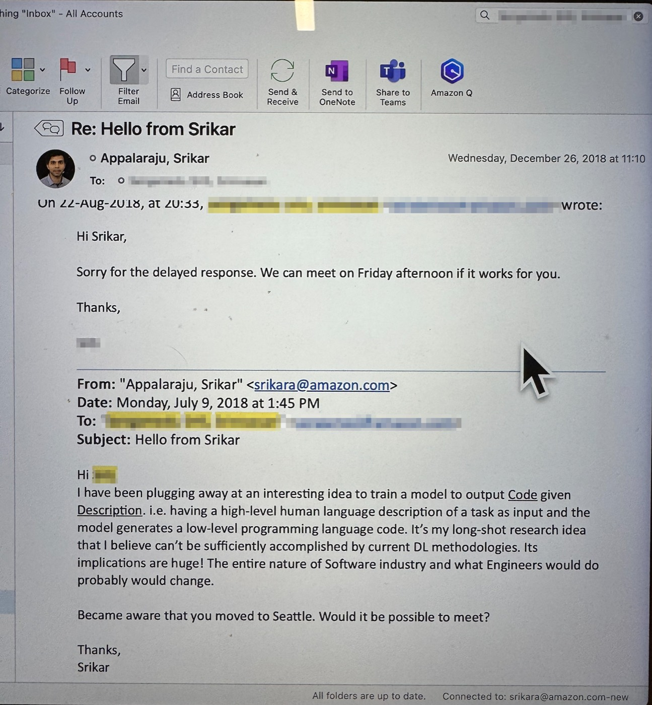

Essay
Thoughts on Vibe Coding 2018-2026

I had originally sent this on July 9, 2018 to my then superior as a project proposal. A lot has happened since, trying to date this: the email is four weeks after GPT-111Radford et al. Improving Language Understanding by Generative Pre-Training. OpenAI, 2018., transformers paper22Vaswani et al. Attention Is All You Need. NeurIPS, 2017. was a year old, Copilot33Chen et al. Evaluating Large Language Models Trained on Code. 2021. Codex, behind GitHub Copilot. was still 3 years out, scaling-laws44Kaplan et al. Scaling Laws for Neural Language Models. 2020. 4 years and ChatGPT55OpenAI. Introducing ChatGPT. 2022. almost 5 years. I was trying to show my research work about a model that goes from an English description of a task to low-level code.
I had a working version hacked together using a frankenstein model of LSTMs66Hochreiter, Schmidhuber. Long Short-Term Memory. Neural Computation, 1997. and Transformers. I trained it on all of Amazon internal code repos (which is quite a lot). I wrote that the deep learning we had then couldn't sufficiently do it. It could write smaller functions but anything more complex the model just would repeat. Mind you this is about a 120M parameter model (it was a mess trying to stablize training for a largish LSTM). Current methods and infrastructure were just not enough. I also wrote that if it ever worked, it would change the entire nature of the software industry, and what engineers would do.
The two claims
The screenshot is not a proof that I invented code generation. A lot of people could have said "code from English" in 2018. Seq2seq77Sutskever, Vinyals, Le. Sequence to Sequence Learning with Neural Networks. NeurIPS, 2014. existed. The architecture papers were on the table if you were paying attention. What I actually wrote was narrower than that.
The first claim was a technical judgment from inside the work. GPT-1 had just landed as a language-understanding result. It was not going to write a working program from a paragraph. There was a gap between "this might scale" and "this emits software," and I was sitting in that gap, training a model that could not yet cross it. Current methods were not enough. That was true.
The second claim is the one I couldn't shake. If description-to-code ever got cheap, engineering would not get a smarter autocomplete. It would get a new question: what is the engineer for? I was ready to quit my job to pursue this question full time but visa troubles prevented me to it.
The Why?
I remember having a very strong conviction that it should work, but for the life of me could not figure out why I could not get it to work. Code (any language) is a very structured prediction problem, its almost a language-translation problem: english -> translated to python/C/C++, at that time language translation was being swept up by transformers22Vaswani et al. Attention Is All You Need. NeurIPS, 2017., I extrapolated it to coding and had a conviction that it should be easy for a model to do this, esp. since a programming language has much less "vocabulary" and a lot more on structural correctness and syntactic sugar. Little did I know at that time but i was missing a key ingredient - "scaling"44Kaplan et al. Scaling Laws for Neural Language Models. 2020. – both in model size and data.
The second half is still open
The models got very good, very fast, at emitting code. We did not get correspondingly good at deciding which code, why this system, what to trust, what to throw away or how a team of humans should spend a day when the typing is no longer the bottleneck. Things are about to get more intense with thousands of agents creating competing versions of a software all vying to be a contender only for 1 version to be picked. Now its very much possible that the coding models get so scary good that no-human needs to look behind the curtain to see how the sausage factory works. Any bug, ask the model to take care of it88Jimenez et al. SWE-bench: Can Language Models Resolve Real-World GitHub Issues? ICLR, 2024.99Resolve.ai: agentic AI SRE for production debugging and incident response. (I wrote thinkingsdk1010Appalaraju. ThinkingSDK: AI crash debugging for Python in production. on that light).
All written or spoken communication is lossy and discrete. It is open to interpretation (esp. english) and no amount of written directions are precise enough to capture "every" little design decision one wants out of the coding agent writing the software. For the foreseeable future, I humans would be integral part of the software making process guiding these models to produce the "design" that they want instead of model doing something.
What Next?
There was a brief time (late-2025) when i felt like a fraud using the coding agents, mostly hubris but its now an invaluable tool, ignore at your own peril (esp. If the rest of the team is using them). Definitely the craft of being a software engineer is changing from writing lines to code to having a "taste" of good design and what kinds of design is appropriate here, what kinds leads to less bugs and rewrites later. We are in a wild and transformative phase of software industry.
Despite the power of AI coding models, I emphasize that humans remain essential for high-trust activities, building rapport, creative "taste-making" and providing the "human-in-the-loop" oversight necessary for complex decision-making. A "human" would still have to take responsibility for the software work-product.
Cite this article
@misc{appalaraju2026vibecoding,
title = {Thoughts on Vibe Coding 2018-2026},
author = {Appalaraju, Srikar},
year = {2026},
howpublished = {https://srikarappal.github.io/code-from-english.html}
}